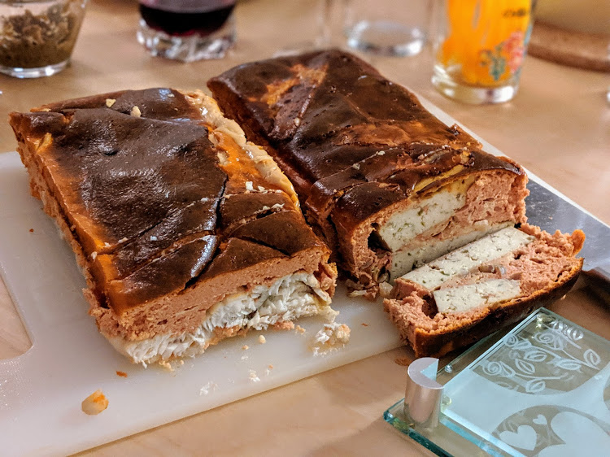

Pain de poisson

À gauche, pain de poisson classique ; à droite, version au tofu (cf. remarque ci-dessous).
Pour 7-8 personnes (large) :
- 1.2 kg de poisson blanc (lotte, colin…)
- Six cubes de court-bouillon
- 11 œufs
- Deux ou trois cuillères de crème
- Une petite boîte de concentré de tomates
- Mettre les pastilles de court-bouillon dans un peu d'eau. Faire bouillir jusqu'à ce que ça fonde, et rajouter de l'eau froide pour respecter les proportions marquées sur le paquet. Laisser refroidir.
- Pendant ce temps, battre les œufs omelette avec la crème et le concentré de tomates. Saler, poivrer.
- Mettre le poisson dans le court-bouillon froid (enfin, tiède, quoi). Faire cuire jusqu'à ce que ça bouille, laisser frémir cinq minutes, puis les laisser cinq minutes de plus à feu éteint.
- Sortir le poisson, le laisser refroidir un peu et bien l'égoutter avec du
sopalin. Préchauffer le four à 200°C.
- Beurrer un moule à cake en silicone (ou bien, un moule à cake normal tapissé de papier sulfurisé un peu beurré), verser l'omelette, et ajouter le poisson.
- Poser le moule dans un moule plus grand rempli d'eau, pour faire cuire tout ça 45 minutes au four, au bain-marie (oui, c'est un peu bizarre, mais c'est comme ça que ça marche).
- Piquer à la fourchette, et mettre au frigo. Le démouler et le couper en tranches le lendemain, et le servir encore un jour plus tard, accompagné de mayonnaise ou d'aioli.
Remarque : comme alternative végétarienne au poisson, on peut utiliser par exemple du tofu au miel et soja.
Retour à la liste des recettes